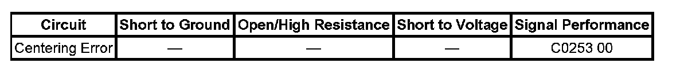

C0253
DTC C0253
DTC Descriptor
DTC C0253 00
Centering Error
Diagnostic Fault Information
Perform the Diagnostic System Check - Vehicle prior to using this diagnostic procedure. Initial Inspection and Diagnostic Overview

Circuit/System Description
The usable output voltage range for the lateral accelerometer and yaw rate sensors is 0.25-4.75 volts. The scan tool will report zero lateral acceleration or yaw rate as 2.5 volts with no sensor bias present. The sensor bias compensates for sensor mounting alignment errors, electronic signal errors, temperature changes, and manufacturing differences.
Conditions for Running the DTC
^ The ignition is ON.
^ Ignition voltage is greater than 9.5 Volts.
Conditions for Setting the DTC
^ The calculated steering angle from the steering wheel position sensor does not correlate with the steering angle calculated from the yaw rate.
^ The vehicle has been driven for 10 minutes without completing steer angle centering.
Action Taken When the DTC Sets
One or more of the following actions may occur:
^ The antilock brake system (ABS) and vehicle stability enhancement system (VSES) are disabled.
^ TCS is degraded.
^ The driver information center (DIC) displays the Service Stability System message.
^ The antilock brake system (ABS) /traction control system (TCS) remains functional.
Conditions for Clearing the DTC
^ The condition for the DTC is no longer present.
^ The electronic brake control module (EBCM) automatically clears the history DTC when a current DTC is not detected in 100 consecutive drive cycles.
Reference Information
Schematic Reference
Antilock Brake System Schematics
Connector End View Reference
Antilock Brake System Connector End Views
Description and Operation
ABS Description and Operation (Under 8600 GVW) ABS Description and Operation (Equal to or Over 8600 GVW)
Electrical Information Reference
^ Circuit Testing
^ Connector Repairs
^ Testing for Intermittent Conditions and Poor Connections
^ Wiring Repairs
Scan Tool Reference
Scan Tool Data List for EBCM
Circuit/System Testing
NOTE: If DTC C0710 is set diagnose it before performing this diagnostic.
1. Ignition OFF, disconnect the harness connector at the steering angle sensor (SAS).
2. Test for less than 1.0 ohm of resistance between the low reference circuit terminal 2 and ground.
^ If greater than the specified range, test the low reference circuit for an open/high resistance. If the circuit tests normal, replace the EBCM.
3. Ignition ON, test for 4.8-5.2 volts between the 5-volt reference circuit terminal 1 and ground.
^ If less than the specified range, test the 5-volt reference circuit for a short to ground or an open/high resistance. If the circuit tests normal, replace the EBCM.
^ If greater than the specified range, test the 5-volt reference circuit for a short to voltage. If the circuit tests normal, replace the EBCM.
4. Test for 4.8-5.2 volts between the 5-volt reference circuit terminal 1 and the signal circuit terminal 6.
^ If less than the specified range, test the signal circuit for an open/high resistance. If the circuit tests normal, replace the EBCM.
^ If greater than the specified range, test the signal circuit for a short to voltage. If the circuit tests normal, replace the EBCM.
5. Ignition OFF, reconnect the SAS.
6. Disconnect the EBCM harness connector.
7. Test for infinite resistance between the signal circuit pin 4 and ground.
^ If less than the specified range, test the signal circuit for a short to ground.
8. Disconnect the SAS.
9. Reconnect the EBCM harness connector.
10. Ignition ON, test voltage of phase A phase B, and phase C. verify that the reading is battery positive voltage for each of the three phases.
^ If not the specified value, test the phase A phase B, and phase C circuits for a short to ground or an open/high resistance. If the circuit tests normal, replace the EBCM.
11. Ignition OFF, reconnect the SAS. Turn the ignition ON. Turn the steering wheel through its full range and back to straight ahead to center the SAS. Using the scan tool, observe the steering wheel position. The parameter changes smoothly while turning the steering wheel through the entire range and correlate to zero reading with the wheels in a straight ahead position.
^ If the steering wheel position parameter does not change, replace the SAS.
^ If the steering wheel position parameter change, replace the EBCM.
Repair Instructions
Perform the Diagnostic System Check - Vehicle after completing the diagnostic procedure. Initial Inspection and Diagnostic Overview
Control Module References for EBCM
Repair Verification
Diagnostic Repair Verification